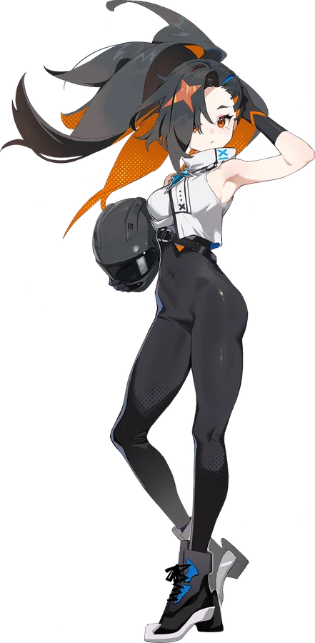
星魅琉华 · 午夜闪光
库拉拉的好友兼搭档，“虹之镜”酒吧的调酒师。“退魔之夜”和“天王落”事件的亲历者。午夜飙车党的精神领袖，人送称号“午夜闪光”。“天王落”事件引发了公司之间的激烈战斗，“虹之镜”作为之前的万事屋自然不能避免，自从酒吧名义上的老大在“退魔之夜”失踪后，星魅琉华也逐渐的淡出了大众的视野。
本回合移动骰点变为投2枚6面的骰子，移动时无法触发战斗，但会对经过的敌方角色和怪物造成移动步数50%的伤害。
PVE本回合移动骰点变为投2枚6面的骰子，移动时无法触发战斗，但会对经过的怪物造成2+自身攻击力的伤害。
1回合1次，经过【保障点】后，主动技能冷却时间-2。
使用主动技能时可以丢弃一张战斗牌，如果此时丢弃了战斗牌，本回合攻击力额外+（当前星级+丢弃战斗牌战斗费用）。 使用主动技能后，自由选择移动方向。
基础资料
PVE 特性
- 达到1星时攻击力+1
- 达到2星时攻击力+2
- 达到3星时攻击力+1、移动速度+2
默认
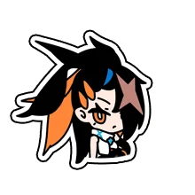
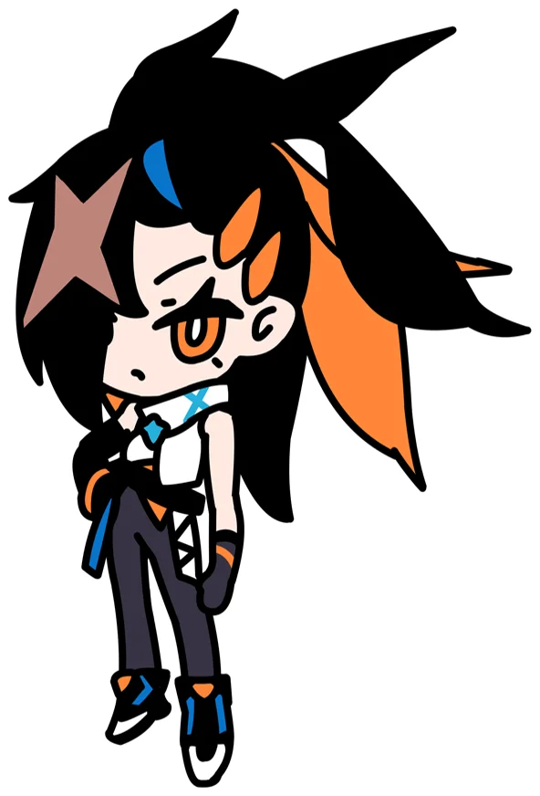
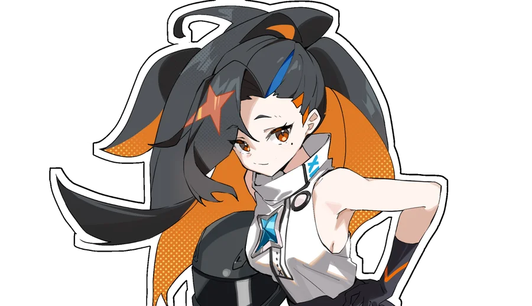
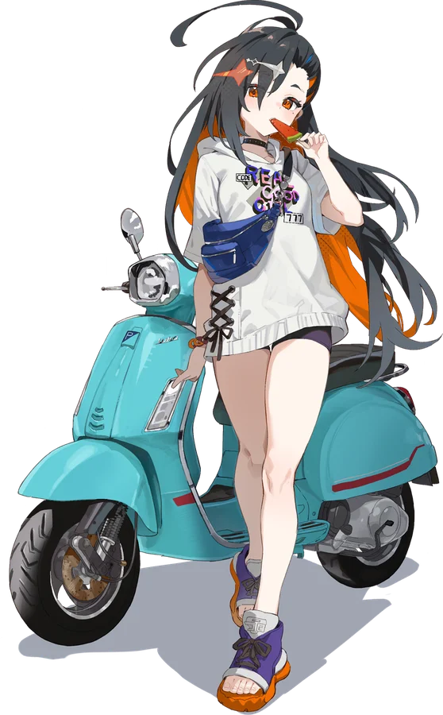
羁绊皮肤
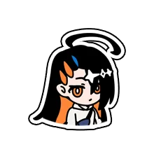
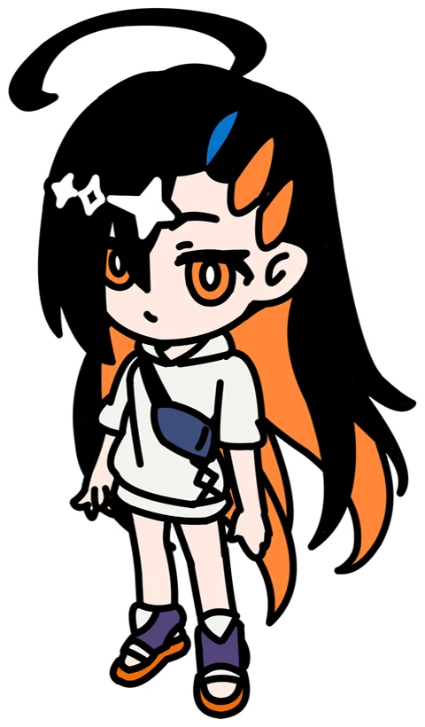
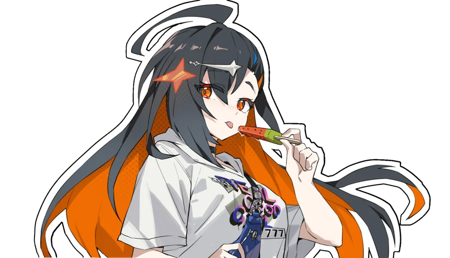
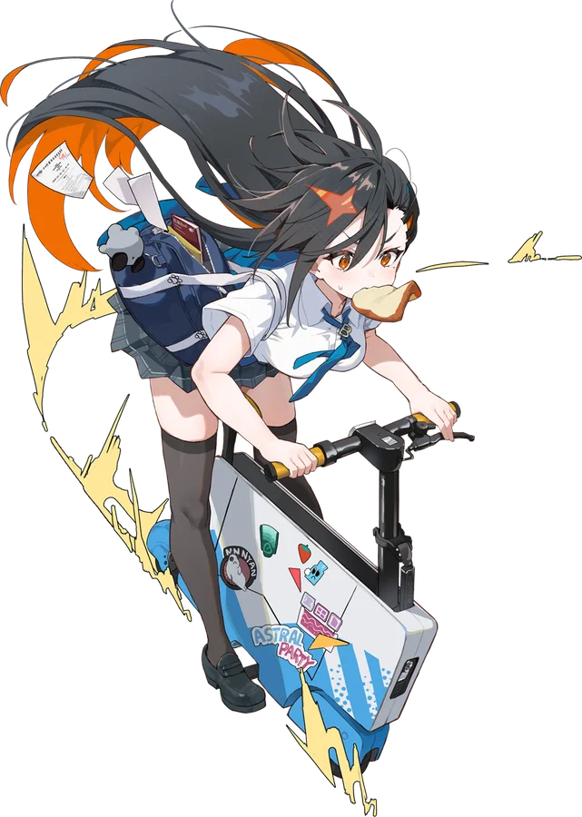
转角之期
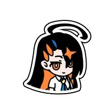
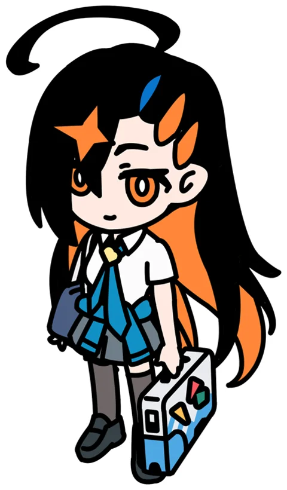
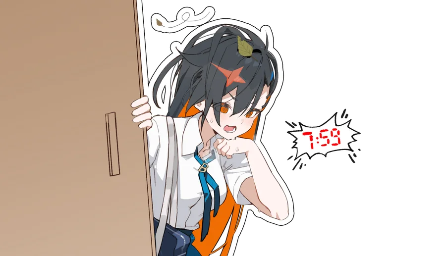
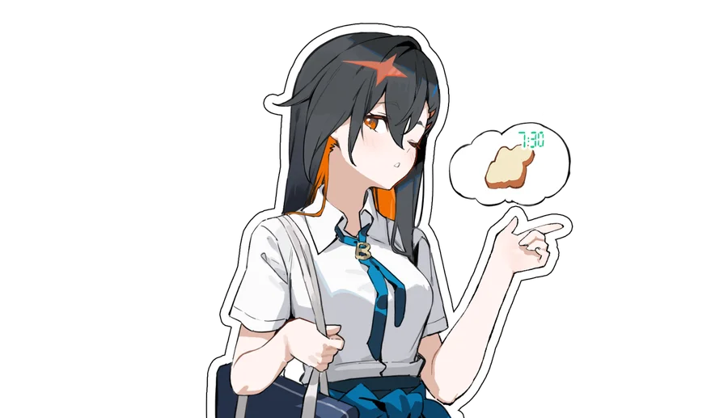
库拉拉留意到琉华房间内墙上挂着的制服，突然说道了过往的事情。 “那个笨蛋被你撞得很惨呢。” “飞出去老远了。” “他每次受伤似乎很快就好了，难道笨蛋都是这个体质？”库拉拉说道。 “他撞飞出去都没事，为什么那晚..” “不是他和老师那晚我们都完了。”库拉拉打断了琉华。 “我知道..但是..” “他和老师一定没事的。”库拉拉给琉华整理好头发，把梳子放到一旁。 “好了快起来洗脸去。梅加斯打电话来说要我们去帮她徒弟的游戏比赛捧场呢。”库拉拉催促道。 “你说我穿这个去怎么样？”琉华看着墙上的制服。 “谁管你，哈哈哈。” 真要穿这个的话，可能今天又有一个叼着面包的可爱女高中生，骑着自己心爱的车给你在转角撞飞起来也说不定呢。
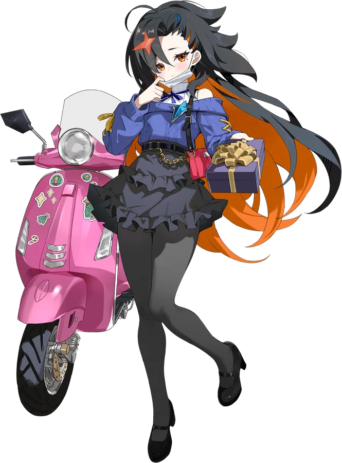
特别礼物
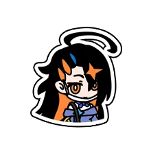
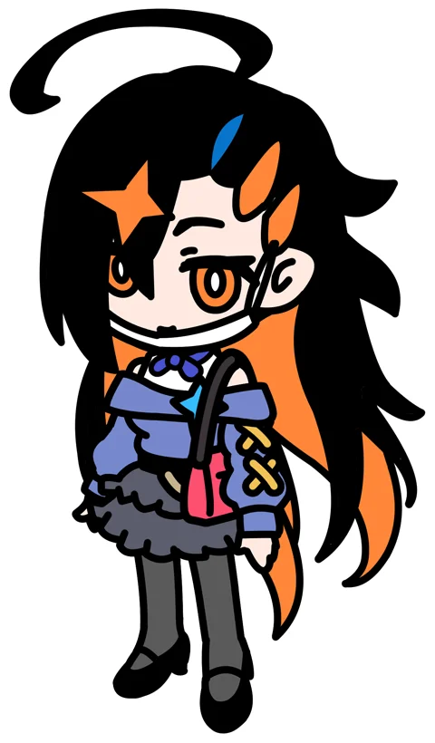
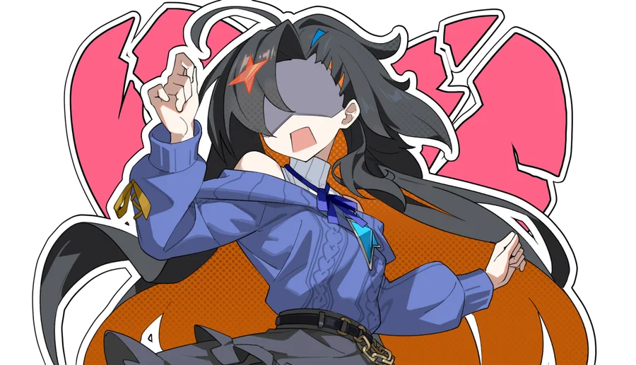
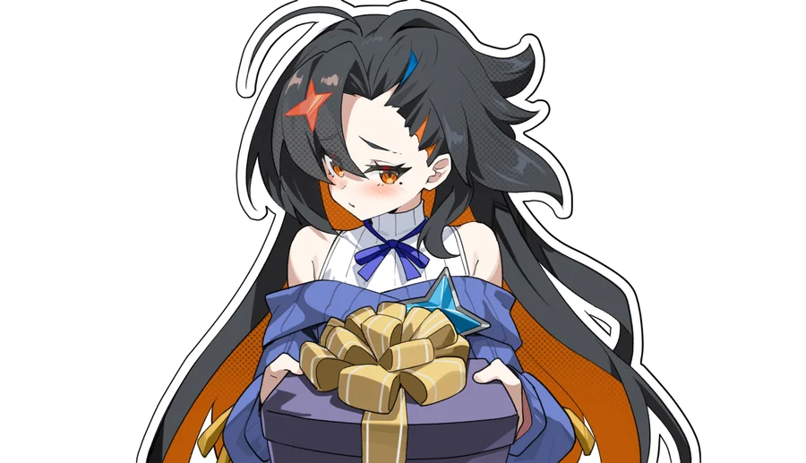
“如…如果你不介意的话…请收下这个！！！”琉华拉下口罩，红着脸递出了一个礼物盒。 “这…真不好意思，可是为什么是我？” “因为今年确实受到你的照顾了，这是回礼…”琉华的脸红到极致，感觉像一个大番茄。 “那，比起得到礼物，我更想…”对方抓住琉华的手，然后慢慢地将脸颊靠近琉华，两人的脸几乎都要贴在一起了，琉华甚至快晕过去了。 “你你你你你要干嘛…”琉华背过脸去，对方的气息在琉华的脖子上嗅探着。 “真可爱，那么，我要开动了~” “唉！啊不要啊！！！”琉华下意识地一巴掌打到了对方的脸上。 “唉停停！！怎么真打啊！”旁边的老大喊了起来。 “谁…谁叫库拉拉加戏！”琉华红着脸发脾气了。 “大小姐，你就这还想送礼物呢，送之前他都给你打死了…”库拉拉揉了揉脸蛋，还好琉华也没有真发力。 “我…我，我没送过别人礼物嘛！！要不然叫你们来帮我干嘛！”琉华很是委屈。 “好了好了，你重新来吧，记住，不准打人！”老大叮嘱起来。 “我…我尽量。” “库拉拉不准挑拨她！”老大又说道。 “唉，可爱的不行当然要挑拨一下了。”库拉拉坏笑着说道。
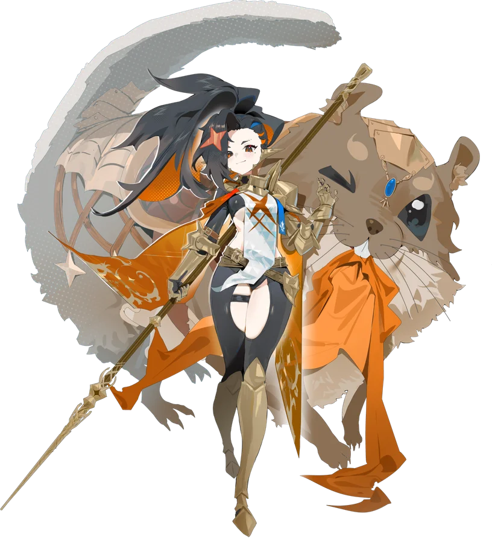
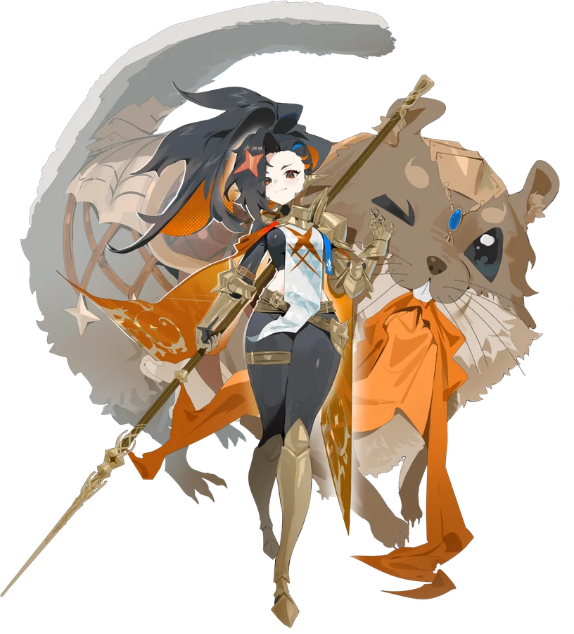
仓栗骑士
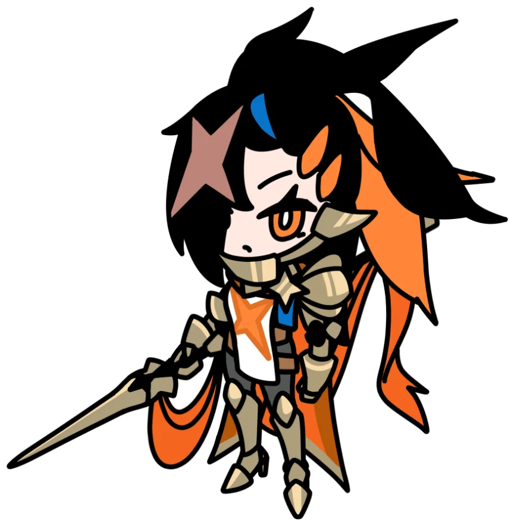
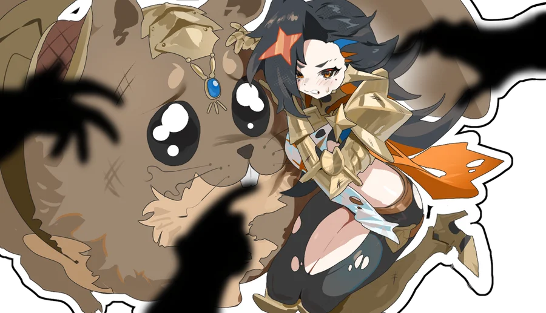
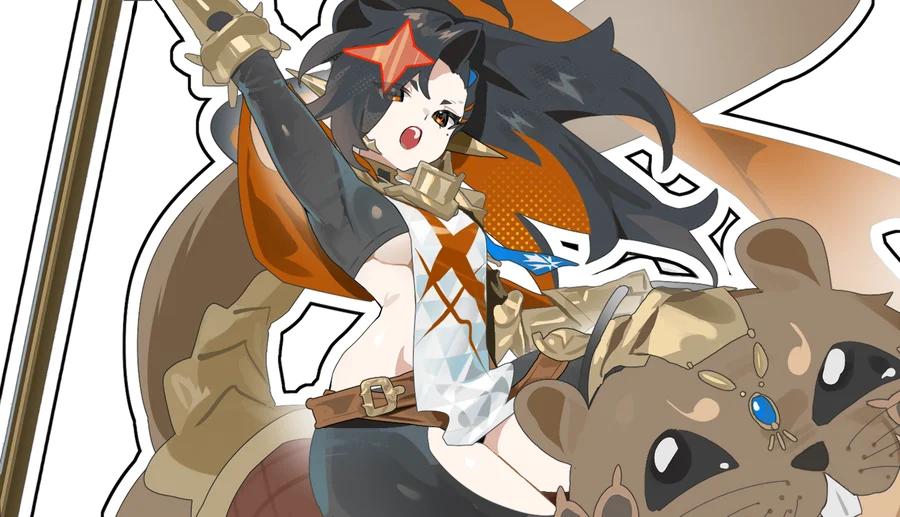
“啊，这个好可爱！”茉莉高兴地手舞足蹈，疯狂地抚摸着这毛绒绒的大家伙。 “嘿嘿，我就是看到这个世界的坐骑居然是这东西，才决定加入骑士团的！”此时的琉华穿着一套飒爽的骑士服，手持一把长枪，英姿飒爽。只是她身后的坐骑略显可爱。 “童话故事不就应该这样吗？”蓝海晴通过某种特殊手段在他们脑内通话，仿佛天之音一般。 “总之必须按照规则书的内容，完成一定的成就和任务，才能破解故事的最终谜题并救出雅央，对吧？”琉华整理了一下现在的情况，和蓝海晴确认道。 “对的，我们可能受这个异常影响。我担心万一出什么差错，只好借了露佳的‘保镖’。原本想去求助大书库管理员，但那人太暴力了，万一发火把书烧了，我还要留着这些书呢。”蓝海晴回应道。 “没事，我大概明白了。那么，茉莉仔，还有……这个毛绒绒的，麻烦多关照了！”琉华对着两人行礼。 茉莉完全被这个生物吸引住了，那只巨大的仓鼠也对着茉莉狂舔，看来是喜欢她。 “啊哈哈哈哈……看样子一时半会儿是没法去执行任务了。”琉华微笑着看着两人。
共 17 个表情，点击可放大。
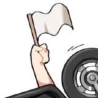
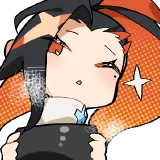
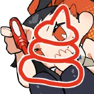
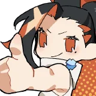
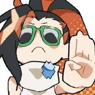
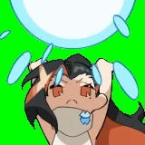
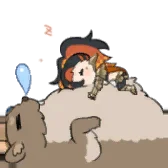
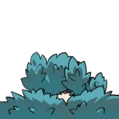
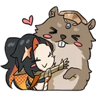

官方 wiki 没有这角色的 /获取 页，头像、名片、卡牌、骰子的完整清单暂缺；下方「档案」里保留了画廊中的零散素材。
人物传记
周六偶尔会帮助库拉拉打理酒吧。
皮肤故事
转角之期
库拉拉留意到琉华房间内墙上挂着的制服，突然说道了过往的事情。 “那个笨蛋被你撞得很惨呢。” “飞出去老远了。” “他每次受伤似乎很快就好了，难道笨蛋都是这个体质？”库拉拉说道。 “他撞飞出去都没事，为什么那晚..” “不是他和老师那晚我们都完了。”库拉拉打断了琉华。 “我知道..但是..” “他和老师一定没事的。”库拉拉给琉华整理好头发，把梳子放到一旁。 “好了快起来洗脸去。梅加斯打电话来说要我们去帮她徒弟的游戏比赛捧场呢。”库拉拉催促道。 “你说我穿这个去怎么样？”琉华看着墙上的制服。 “谁管你，哈哈哈。” 真要穿这个的话，可能今天又有一个叼着面包的可爱女高中生，骑着自己心爱的车给你在转角撞飞起来也说不定呢。
特别礼物
“如…如果你不介意的话…请收下这个！！！”琉华拉下口罩，红着脸递出了一个礼物盒。 “这…真不好意思，可是为什么是我？” “因为今年确实受到你的照顾了，这是回礼…”琉华的脸红到极致，感觉像一个大番茄。 “那，比起得到礼物，我更想…”对方抓住琉华的手，然后慢慢地将脸颊靠近琉华，两人的脸几乎都要贴在一起了，琉华甚至快晕过去了。 “你你你你你要干嘛…”琉华背过脸去，对方的气息在琉华的脖子上嗅探着。 “真可爱，那么，我要开动了~” “唉！啊不要啊！！！”琉华下意识地一巴掌打到了对方的脸上。 “唉停停！！怎么真打啊！”旁边的老大喊了起来。 “谁…谁叫库拉拉加戏！”琉华红着脸发脾气了。 “大小姐，你就这还想送礼物呢，送之前他都给你打死了…”库拉拉揉了揉脸蛋，还好琉华也没有真发力。 “我…我，我没送过别人礼物嘛！！要不然叫你们来帮我干嘛！”琉华很是委屈。 “好了好了，你重新来吧，记住，不准打人！”老大叮嘱起来。 “我…我尽量。” “库拉拉不准挑拨她！”老大又说道。 “唉，可爱的不行当然要挑拨一下了。”库拉拉坏笑着说道。
仓栗骑士
“啊，这个好可爱！”茉莉高兴地手舞足蹈，疯狂地抚摸着这毛绒绒的大家伙。 “嘿嘿，我就是看到这个世界的坐骑居然是这东西，才决定加入骑士团的！”此时的琉华穿着一套飒爽的骑士服，手持一把长枪，英姿飒爽。只是她身后的坐骑略显可爱。 “童话故事不就应该这样吗？”蓝海晴通过某种特殊手段在他们脑内通话，仿佛天之音一般。 “总之必须按照规则书的内容，完成一定的成就和任务，才能破解故事的最终谜题并救出雅央，对吧？”琉华整理了一下现在的情况，和蓝海晴确认道。 “对的，我们可能受这个异常影响。我担心万一出什么差错，只好借了露佳的‘保镖’。原本想去求助大书库管理员，但那人太暴力了，万一发火把书烧了，我还要留着这些书呢。”蓝海晴回应道。 “没事，我大概明白了。那么，茉莉仔，还有……这个毛绒绒的，麻烦多关照了！”琉华对着两人行礼。 茉莉完全被这个生物吸引住了，那只巨大的仓鼠也对着茉莉狂舔，看来是喜欢她。 “啊哈哈哈哈……看样子一时半会儿是没法去执行任务了。”琉华微笑着看着两人。
画廊其他素材


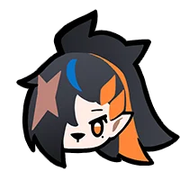
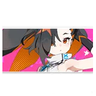
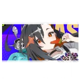
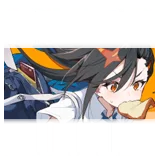
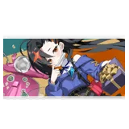
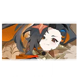
本地未收录该角色的语音台词。